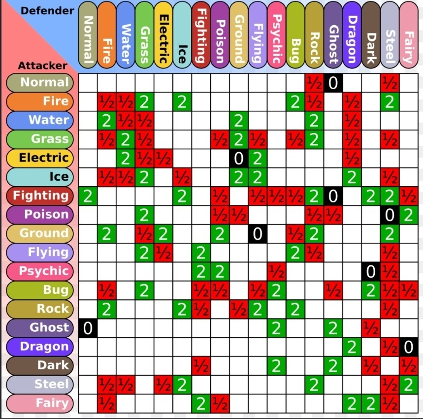

Внутренняя часть игры
Куда больше мне хотелоь бы поведать именно о том,ак работают игры Покемон
Стоит начать с того,что у игры есть 2 версии:FireRed и Leafgreen.Это стандартная практика в играх покемон,т.к в них есть механика обмена покемонами между игроками,и дабы замотивировать игроков,стремящихся заполнить покедекс,пркатиковать обмен, версии имеют разный набор покемонов.Какие-то есть только в Огненно Красной,а какие-то есть только в Лиственно Зелёной.И играл я именно в Leafgreen,считаю важным это обозначить. Это игры,внутри серии относящиеся к 3му поколению (поколением называется консоль,на которой вышла игра.Как правило,конкретное поколение имеет свой собственный набор покемонов),но так как сами игры представляют собой переиздание самых превых игр 1996 года,т.е. 1 поколения,то и покемоны в них встречаются исключительно из 1го поколения.
Параметры
Каждый покемон имеет набор из 6 параметров,статов,характеистик,как угодно: HP-здоровье покемона,отражающее его текущее состояние.Если оно опуститься до 0- покемон проиграл. АТК-Атака или Физическая Атака,базовый урон покемона,который используется с Физическими движениями DEF-Физическая Защита,отнимается от Физической атаки противника,когда тот наносит Физ.Урон SPEC.ATK-Специальная Атака,урон покемона,который используется со Специальными движениями SPEC.DEF-Специальная Защита,отнимается от Специальной атаки противника,когда тот наносит Спец..Урон SPE-Скорость.У какого покемона она выше,тот и ходит первым. Характеристики можно повышатьили понижать во время боя статусными движениями,и именно параметры играют ключевую роль в создании команды покемонов. Сумма всех 6 параметров считается единой мерой силы покемона.Чем выше сумма статов,тем покемон сильнее. Более подробно о характеристиках будет рассказано в следующей странице.Эволюция
Ключевая механика во всей серии Покемон.Когда карманный монстрик набирает достаточно опыта,он становится сильнее.А эволюция-это ключевой момент в становлении покемона сильнее,ибо тот притерпевает внешние метаморфозы. Смотреть видео на YouTube
В покемонах есть 3 традиционных путя эволюции,зависящие от конкретного покемона: 1.Повышение уровня 2.С помощью специальных камней (на видео как раз он и показан) 3.При помощи обмена
Эволюция-неотъемлемая часть в прохождении игр Покемон.
Ходы и Движения
Покемоны,прежде всего,это бои. В покемонах боёвка пошаговая: Пока ты делаешь ход,противник ждёт,и наоборот. В свой ход можно сделать не более одного действия: Например,кинуть покебол в дикого покемона или убежать от него. Заменить своего покемона,который уже находится в бою,на другого. Использовать специальные вспомогательные предметы, И,конечно же,использовать движения. Движения-это действия,которые совершает покемон во время схватки п приказу игрока.Каждое движение имеет составные части:
| Параметры Движений | Значения |
|---|---|
| Power | Базовая сила движения,если оно атакующее |
| Accuracy | Шанс успеха исполняемого действия (выражен в процентах) |
| Тип | Определяет стихийную принадлежность движения,против покемонов какого типа оно будет или не будет эффективным. |
| Дополнительный эффект | Описание движение,меняющее обстановку на поле боя,к примеру,снизить показатели вражеского покемона или наложить на него негативный эффект,вроде сна или заморозки,заставляющие покемона пропустить ход, паралича,который срезает скорость покемона в 2 раза и с шансом 1 к 4 заставит его пропустить ход, или ожог с отравлением,которые будут медленно отнимать здоровье у покемона. |
Физические,Специальные и Статусные Движения.
Движения в покемонах делятся на 3 основные категории. Начнём со статусных,ибо о них говорить по факту и нечего,они нужны чтобы накладывать негативные эффекты на варга,и снижать ему параметры, и наоборот,повышать параметры своеум покемону. Физические-тип движений,использующий Физическую Атаку и Защиту покемонов. Обычно во время боя подразумевают собой какое то действие во время боя: царапание,удар кулаком,укус,бросок камня,удар из под земли и прочее. Специальные-тип движений,использующий Специальную Атаку и Защиту покемонов. Для простого человека их можно объяснить как "всё что связано с магией" Удары молниями,ледяные лучи,огненное дыхание,психокинез,вихрь из острых цветочных лепестков и т.д.
Каждое движени имеет свой 1 из трёх типов. Однако тут стоит внести важную ремарку.Так как LeafGreen- это игра 3го поколения,то и разделение типов в ней специфичное.До 4го поколения в покемонах на Физ. и Спец. делились не сами движения,а их типы,т.е. какие-то типы использовали только физические,а какие-то только специальные параметры,и иногда это может немного ломать логику.
К примеру,есть огненное движение Fire Punch.В нынешних играх оно Физическое, потому что это удар кулаком,но в играх 3го поколения оно Специальное. Почему? Потому что оно огненное,а в этих играх все огненные движения используют только Спец.Параметры. И с некоторыми покемонами это играло злую шутку,впрочем,об этом чуть позже. В покемонах этот период назывется Тайп Сплитом (Type Split)
Типы и их эффективность
За каждым покемоном закреплён свой стихийный тип, отражающий его природу,преимущества и слабости.
Всего типов в покемонах 18: Нормальный Огненный Водный Травянной Электрический Ледяной Боевой Ядовитый Земляной Летающий Психический Жучий (или Жук) Каменный Призрачный (или Призрак) Драконий (или Дракон) Тёмный Стальной Волшебный (или Фея)
Типы закреплены не только за покемоном,но и за их атаками. Каждый тип имеет сопротивление к другим,и получает от них в 2 раза МЕНЬШЕ урона, как например Огненный имеет сопротивление к Ледяномым атакам. А также слабость,и от некоторых типов наоборот получает в 2 раза БОЛЬШЕ урона, как Огненный от Водных атак. К тому же покемоны могут иметь иммунитет,то есть атаки некоторых типов по таким особям независимо от обстоятельств на поле боя будут умножаться на 0, как у Летающих есть имунитет к Земляным атакам. Покемон при себе может иметь до двух типов,что значит,что все его Сопротивления,Слабости и Иммунитеты перемножаются.И так покемон с,к примеру Водным и Земляным типом не имеет слабость к электричеству от своей водной половины, потому у Земляного типа к нему иммунитет.Однако такой покемон будет получать 4-кратный урон от Травяных атак,потому что и земля,и вода к ним слабы.

Важно это учитывать не только из банальных соображений эффективности атаки,но ещё и из-за такой вещи как STAB (Same Type Attack Bonus)-бонуса в 50%,если покемон бьёт атакой своего же типа. Но тут стоит учесть,что в FireRed и LeafGreen Фей ещё не существует,они появятся только в играх 6 поколения. А также то,что в регионе Канто есть доступ к Тёмным атакам,но нет Тёмных покемонов.
Здесь как раз можно и упомянуть,что вышеописанное разделение типов очень сильно ограничивало некоторых покемонов. Некоторые типы только Физические:Нормальный,Боевой,Стальной,Призрачный,Жучий,Каменный,Земляной,Ядовитый и Летающий А некоторые только Специальные:Огненный,ВодныЙ,Травяной,Электрический,Тёмный,Психический,Ледяной и Драконий И с некоторыми это играло злую шутку.Например,покемон в FireRed и LeafGreen может иметь сильный перевес в сторону специальных параметров,но иметь Физические типы,и наоборот. А значит STAB у таких особей будет не так эффективен,как хотелось бы


Способности
Усилить покемонов можно дав им различные Предметы. Некоторые,как Charcoal,могут повысить урон атакой конкретного типа,в нашем случае Огненного, А некоторые и вовсе одноразовые,как Ягоды. Но это настолько объёмная тема,что ей можно посвятить отдельную статью,на что я,увы,не отважусь Вот ссылка с большим количеством информации
Способности
У каждого покемона может быть совя уникальная способность,меняющая исход битвы. Они напрямую взаимодействуют с внутреигровыми механиками,состоянием покемона и особенностями ведения боя. К примеру,есть Способности,повышающие урон покемона,когда у него остаётся меньше 1/3 здоровья, или Левитация,которая даёт покемонам с этой способностью иммунитет к Земляным атакам. За каждым покемоном закреплено несколько отдельных способностей,и он может иметь только 1 из них. Как и предметы,обсуждать способности стоит отдельно,ибо это слишком комплексный и сложный аспект. Вот ссылка с большим количеством информации